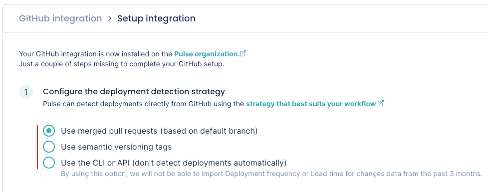
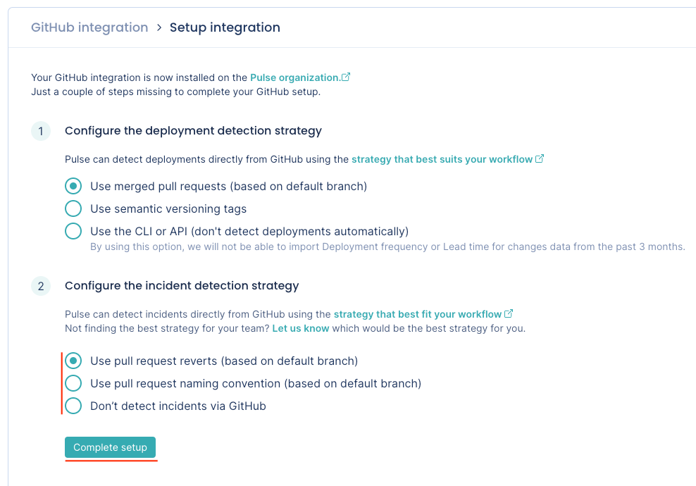
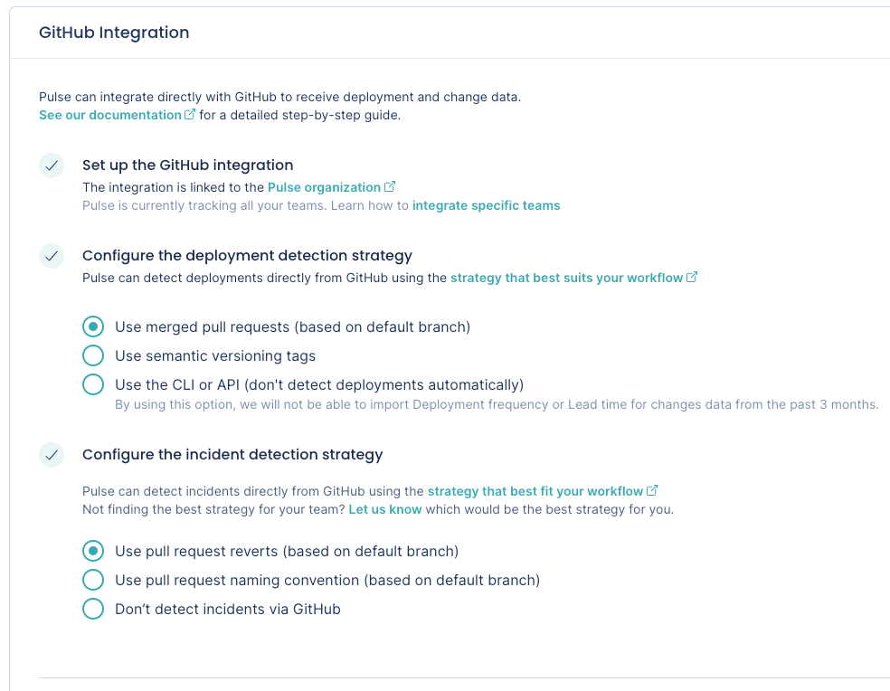
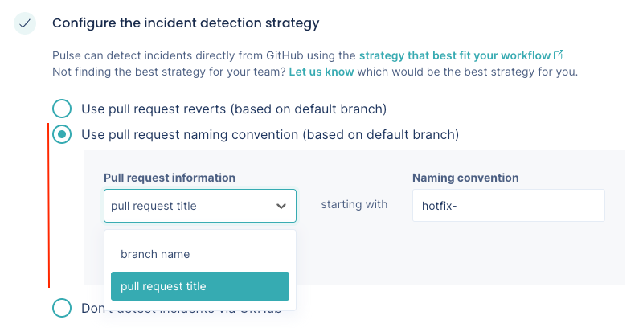

GitHub integration¶
Pulse integrates with GitHub Cloud to receive data about changes, deployments, and incidents, necessary to calculate the metrics:
-
Lead time for changes, including the following drill-down metrics:
Setting up the GitHub integration¶
Note
- You can only install the Pulse GitHub App on an organization and not on your personal account.
- See below the permissions that Pulse requires from your GitHub account.
To set up the GitHub integration:
-
On Pulse, expand Integrations and select GitHub.
-
Click Install GitHub App and follow the instructions on the GitHub UI to install the app on your organization.

-
Confirm that Pulse successfully installed the GitHub app and created the webhook on GitHub. If there is an error please contact support.

-
Choose the strategy to detect deployments that best fits your workflows. See the section below for a detailed description of each option.

-
Choose the strategy to detect incidents that best fits your workflows. See the section below for a detailed description of each option.
Note
Pulse can only detect incidents automatically from GitHub if you configure the deployment detection strategy to use merged pull requests.

-
Click Complete setup.
Your GitHub integration is now complete. Pulse will start loading your data for the last 90 days.

Automatic deployment detection strategies¶
The Pulse GitHub integration can detect deployments automatically using the following strategies:
You can also choose not to detect deployment automatically via GitHub and send your data to Pulse using the CLI or the API.
Use merged pull requests (based on default branch)¶
-
Pulse considers a deployment every merged pull request that targets the default branch of the repository.
-
The deployment date is the timestamp when the corresponding pull request is merged.
-
The set of changes in a deployment is the list of commits in the corresponding pull request. Pulse correctly tracks your changes even if you squash or rebase the commits when merging the pull request, since Pulse processes all the original commits before any changes to the Git history.
-
Pulse associates all GitHub teams of the author of a merged pull request with the corresponding deployment, excluding teams with less than two members. Pulse only takes changes to GitHub teams into account on pull requests merged after those changes.
Use semantic versioning tags¶
-
Pulse considers a deployment every Git tag that follows the SemVer convention, excluding pre-release versions but allowing release prefixes. For example, the following are valid tags:
1.0.0,v2.3.4.To use this strategy, make sure that you're creating Git tags on your repositories for each successful deployment to production, or whenever you make a new release available to any user of your application:
git tag -a MAJOR.MINOR.PATCH -m "<Deployment or release message>"Where
MAJOR.MINOR.PATCHmust be a valid SemVer version without pre-release information. Check if your versioning syntax is valid. -
The deployment date is either the creation date of annotated tags or the timestamp when Pulse receives the webhook calls for lightweight tags.
Keep in mind that since webhook calls can be delayed, the deployment date on Pulse could be imprecise and impact the metric Lead time for changes.
-
The set of changes that belong to a deployment is the list of commits between the tag of that deployment and the previous tag. Because of this, Pulse discards:
- The first SemVer tag in the repository since there is no previous tag to compare with.
- Any tag that doesn't have a common ancestor (commit) with its previous tag, since Pulse can't obtain the changes between them.
-
Pulse associates all GitHub teams of the person who creates a Git tag with the corresponding deployment, excluding teams with less than two members. Pulse only takes changes to GitHub teams into account on Git tags created after those changes.
Use the CLI or API (don't detect deployments automatically)¶
-
Pulse doesn't detect deployments automatically using GitHub events.
This is useful if none of the automatic deployment detection strategies match your workflow and you must have control over the way Pulse tracks your deployments.
-
In this case, you must send to Pulse the information about your deployments and the corresponding changes using the Pulse CLI or the Ingestion API.
Automatic incident detection strategies¶
The Pulse GitHub integration can detect incidents automatically using the following strategies:
You can also choose not to detect incidents via GitHub.
Note
Pulse uses pull requests to detect incidents. Thus, Pulse can only detect incidents automatically from GitHub if you configure the deployment detection strategy to use merged pull requests.
Use pull request reverts (based on default branch)¶
-
Pulse bases incident detection on pull request reverts.
-
Pulse considers an incident any pull request that targets the default branch of the repository merged from a branch whose name starts with
revert-, getting the number of the reverted pull request from the branch name,revert-<pull request number>. If you change the name of the branch created by GitHub when you revert a pull request, Pulse may not be able to obtain the incident data correctly. -
The incident creation date is the timestamp when the reverted pull request was initially merged. If Pulse can't get the reverted pull request number from the branch name, the incident creation date is the timestamp of the first commit to the incident pull request.
-
Pulse associates incidents to the system matching the repository name.
Use pull request naming convention (based on default branch)¶
-
Pulse applies the same mechanism to detect incidents used for the pull request reverts strategy. However, instead of considering branches whose name starts with
revert-, Pulse uses the prefix that you define for the branch name or the pull request title to match the naming convention of your workflow.
-
Your prefix must have 2 to 50 characters. For a branch name, your prefix can't contain spaces or special characters, such as
~ ^ : ? * [. See the Git reference for further details.
Don't detect incidents via GitHub¶
-
Pulse doesn't detect incidents automatically using GitHub events.
Choose this option if you want to send to Pulse the information about your incidents using another Pulse integration - Jira one-click integration, PagerDuty one-click integration, Pulse CLI, or Ingestion API - or if you don't want Pulse to track incidents data.
Collected data¶
The table below lists the data that the GitHub integration collects from your GitHub organization, together with:
- The mapping between the data collected from GitHub and the Pulse data model
- The metrics that Pulse displays on the dashboards, calculated using the collected data
| Data collected from GitHub | Mapping to Pulse data model | Used in |
|---|---|---|
| Pull request commits |
Changes:
|
Lead time for changes on the Accelerate Overview dashboard |
| Pull requests, git tags, or none (configurable) |
Deployments:
|
Deployment frequency and Change failure rate on the Accelerate Overview dashboard |
| Pull requests |
Incidents:
|
Time to recover and Change failure rate on the Accelerate Overview dashboard |
| Pull requests | - | Changes & Reviews dashboard, Work in Progress dashboard |
| Teams |
Deployments:
|
Filters the Accelerate Overview dashboard, Changes & Reviews dashboard, and Work in Progress dashboard by the contributions made by the team |
: Pulse uses the commit author's date since it's more accurate. The committer date can be changed (for example, with a rebase) and stop reflecting the real creation date of the change.
2: Adding a new team or changing the composition of a team on GitHub only affects new data starting from that moment and doesn't have an immediate impact on the dashboards. Also, deleted teams on GitHub are still visible in Pulse.
Which permissions does Pulse need from GitHub?¶
Pulse requests only the necessary permissions from GitHub to collect changes and deployment data from the repositories in your organization and keeps your information secure. See below the detailed list of permissions.
| Scope | Permissions | Description |
|---|---|---|
| Repository permissions: | ||
| Pull requests | Read | Pulse retrieves pull request information to calculate several metrics presented on the dashboards. See the details here. |
| Contents | Read | Pulse retrieves tag information to track deployments via semantic versioning tags. For this, the Pulse GitHub App requires read permission on the contents of files and directories, as it's the same permission that applies to tags. |
| Issues | Read | Pulse retrieves issue information to get the top-level comments of pull requests. |
| Organization permissions: | ||
| Webhooks | Read & Write | Pulse creates organization webhooks to track new or deleted repositories, and the status of the integration. Pulse also creates webhooks subscribed to the following repository events as a trigger to gather the corresponding data in real time:
|
| Members | Read | Pulse retrieves information about members and teams of your organization to filter metrics and for billing purposes. |